X
PRINCIPAL
Dashboard
Servidores
Alertas
Relatórios
Monitoramento
ADMINISTRAÇÃO
Configurações
Suporte
Douglas
Gerente de Infra
Dashboard >
Latência de Rede
Latência de Rede
Servidor #01 - Análise Profunda

Voltar
Pico de Latência - 1h
28ms
Jitter - Variação Tempo chegada de Pacotes
3.4ms
Quantidade de Alertas
0
Latência de Rede (60s)
Tipos de Alertas Registrados
Network Receive [RECV] - 60s
Network Seny [SENT] - 60s